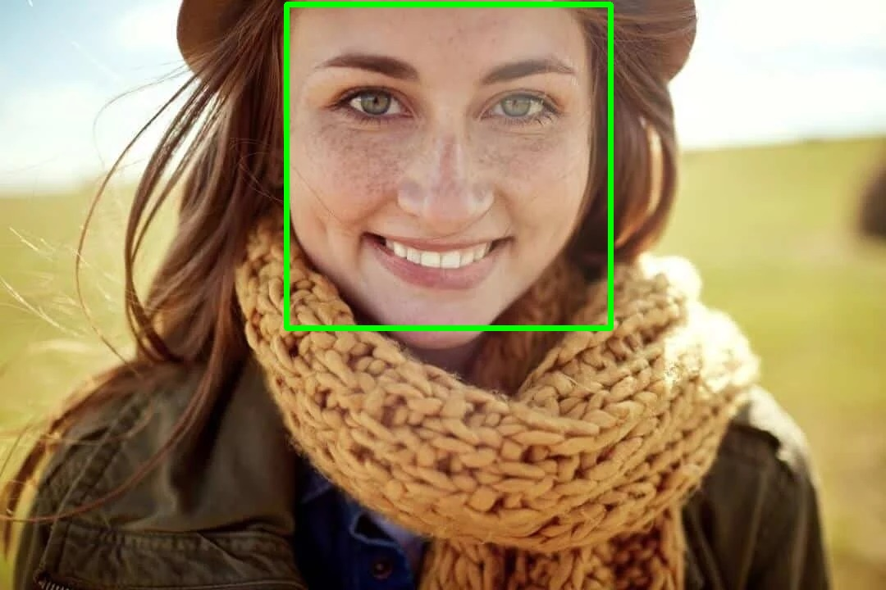
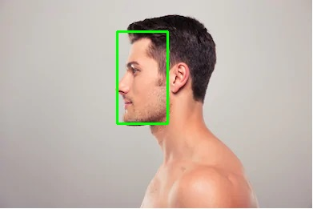
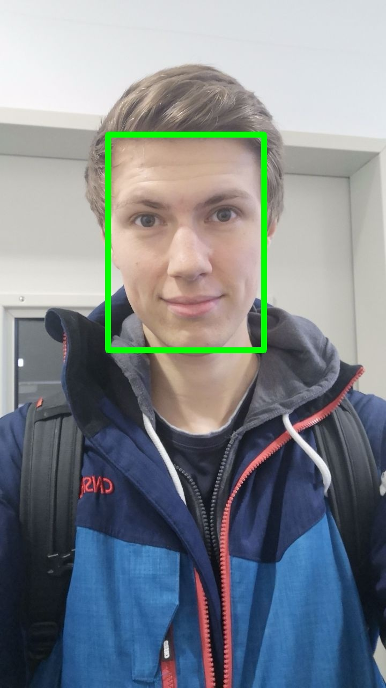
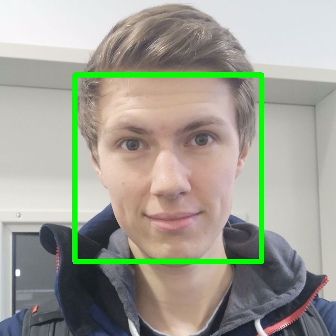

Cropping Service¶
Dieser Service, soll anhand eines Bildes ein Porträtfoto erzeugen. Ein externer Aufruf war für diesen Service nicht vorgesehen. Dennoch ist er notwendig, da die Schwarz-Weiß-Bilder die von Gruppe 6 in ihrem UI angezeigt werden, entsprechend zugeschnitten sein müssen. Des Weiteren muss die Auflösung des Porträtfotos adressierbar sein, da der Laser, der am Ende der Produktion für die Eingravierung zuständig ist, die Bilder in dem Format 600x600px benötigt.
Evaluation¶
Für die Bildung des Porträtfotos muss zunächst ein ROI definiert werden. Dieser definiert sich in folgendem Anwendungsszenario aus dem Gesicht, sowie einem Offset, da auf dem Porträtfoto Haare und Teil vom Hals zu sehen sein sollen. Im Folgenden wird aufgeführt, für welchen Lösungsansatz wir uns entschieden haben, um eine zuverlässige Gesichtserkennung durchzuführen.
Folgende Set-ups haben sich als möglichen Lösungsansatz definieren lassen:
Haar Cascade Face Detector in OpenCV
Deep Learning basierter Face Detector in OpenCV
HoG Face Detector in Dlib
Deep Learning basierter Face Detector in Dlib
Da bei Variante 3) und Variante 4) nur Gesichter mit einer Größe von >= 80x80 erkannt werden können. Haben wir uns für explizit gegen diese entschieden.
Die Varianten 1) und 2) werden nun mithilfe des folgenden Beispielbildes verglichen:
{kind=link}
Haar Cascade Face Detector in OpenCV¶
Die Haar Casecade Gesichtserkennung war seit seiner Vorstellung im Jahr 2001 für viele Jahre das State of the Art Verfahren, um eine Gesichtserkennung durchzuführen. Über die Jahre hinweg, wurde dieses Verfahren stetig verbessert. In OpenCv kann solch eine Erkennung sehr einfach durchgeführt werden, indem der hierfür entsprechenden Methode, ein Descriptor File als Parameter mitgegeben wird. Diese stellt Opencv ebenfalls zur Verfügung.
Dabei konnten wir die besten Ergebnisse mit folgendem Descriptor File erzielen: haarcascade_frontalface_alt.xml
Mit diesem Verfahren konnte das Gesicht aus unserem Beispiel erfolgreich erkannt werden:
{kind=link}
Der Nachteil von diesem Ansatz ist jedoch, dass bei nicht frontal geschossenen Bilder, keine Gesichter erkannt werden.
Deep Learning basierter Face Detector in OpenCV¶
Dieses Model wurde mit der Version 3.3 von OpenCv veröffentlicht. Es handelt sich um Single-Shot-Mutlibox detector, der eine ResNet-10 Architektur als Backbone verwendet. Das Model wurde basierend auf Bilder aus dem Internet trainiert. Leider wurde nicht bekannt gegeben, welche Bilder genau zum Trainieren verwendet wurden.
Dieser Face Detector, kann mit zwei Models ausgeführt werden. Wir haben uns für die Float 16 Version der originalen caffee Implementierung entschieden.
Mit diesem Verfahren konnte das Gesicht aus unserem Beispiel erfolgreich erkannt werden:
{kind=link}
Des Weiteren können mit diesem Lösungsansatz auch Gesichter erkannt werden, die seitlich fotografiert wurden:
{kind=link}
Bemerkung
Für einen weiteren Vergleich aller Lösungsansätze siehe: https://www.learnopencv.com/face-detection-opencv-dlib-and-deep-learning-c-python/
Cropping¶
Zunächst wird auf dem Originalbild das Gesicht mit einem Deep Learning basierten Face Detector in OpenCV erkannt.
{kind=link}
Danach wird der ROI definiert, indem auf die Bounding-Box ein Offset drauf gerechnet wird. Daraufhin wird das Porträtfoto erzeugt.
{kind=link}
Anschließend wird das Foto auf die Zielgröße skaliert, ohne das Seitenverhältnis zu verlieren.